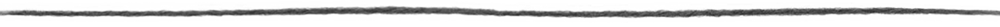
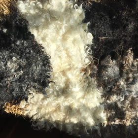

逸見吏佳さんが2004年に、自然と融和する生き方を望み、都会から離れて子どもの育ちも考えながら、思い切って美深町へ移動の決心をつけた。日本中に羊がいる地方が少ないが、北海道はその内の唯一の島という背景の中で暮らし、捨てられる予定の羊毛をもったいないと思うのをきっかけとして、デザインをし始めたのは自然な成り行きであった。様々な羊の毛を採用して、何日間に心をこめて毛を整え縮絨して、服や鞄や靴を含めて色々な作品を作ってきた。。このシンプルかつエレガントなデザインは、吏佳さんがしている、凍えるほど寒い北海道の天然に囲まれている生活を反映する。



資源（羊毛）について
羊毛は身近に暮らすひつじたちの毛を主役にしています。 用途によっては、海を渡って来るものもあります。 洗いから、染め、毛を整える作業は全て手作業で行なっています。
×